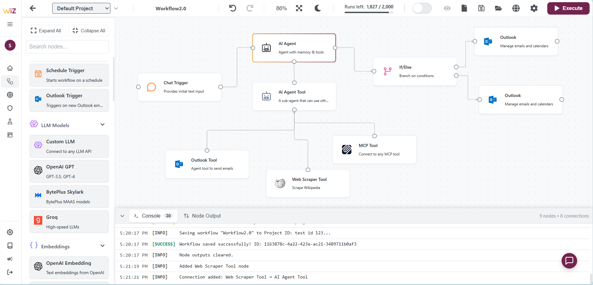

Welcome to WiiZ Atlas 2.0
Find Us On
Join our community and follow the journey on your favorite platforms.


The Command Center for Your AI Agents
Visually build, monitor, and scale your automated workflows from one unified dashboard.

Build Visually, Deploy Instantly
Use our drag-and-drop canvas to design complex AI workflows in minutes, not months. Go from idea to production with a single click.
Connect Anything, Anywhere
Integrate seamlessly with your existing apps, databases, and APIs. Our pre-built connectors make data silos a thing of the past.
Enterprise-Grade Security
Deploy with confidence. WiiZ offers hybrid deployment options, secure credential management, and robust governance for full compliance.
Full Observability & Control
Monitor your AI agents in real-time with comprehensive logs and analytics. Optimize performance and scale your operations with data-driven insights.
Unlock Your AI Potential Today
Discover the no-code platform designed to help you create, deploy, and scale AI agents with unprecedented speed and simplicity.
Contact Us